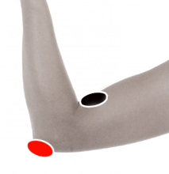

Parálisis del brazo
Par
braquial - codo

Generalidades:
Probar en caso de parálisis de brazo, útil en caso de afectación del nervio radial.
La parálisis puede deberse a varios factores, entre los que se destacan:
Este par es util sobre todo cuando hay afectación del nervio radial.
Causas:
Por golpes, uso de muletas, férulas y otros dispositivos que presionen al nervio (incluso relojes), dormir sobre el brazo, afectación del sistema nervioso por patógenos y otras condiciones.